Menú principal: logo y menú a la izquierda, diorama a la derecha
Maqueta en vivo: corte en «<» (A, el boceto) · corte recto (B). El diorama es el mismo componente animado de la landing (antorchas, portal, murciélago), no una imagen nueva.
- Columna izquierda: logo con su filete y lema, botones alineados al ancho del bloque, aviso de la alpha acortado al pie.
- Corte escalonado en pixel art, sin línea: solo sombra y degradado hacia el fondo para integrarlo.
- Logo arriba con el lema centrado bajo él; el menú abajo.
- Los dos personajes de las esquinas se quitan: el diorama ya tiene un esqueleto y un mercenario dentro.
- Pantalla completa arriba a la derecha, sobre el diorama. Botones de 44 px como mínimo.
- Móvil horizontal: logo pequeño, botones por parejas y el diorama más estrecho (cabe sin apretar, sin que haga falta ponerlo de fondo).
D · Menú C con fondo todo negro (elegida)
Sin corte ni degradados en el fondo: la página es del mismo negro que la oscuridad del diorama, así que la cripta flota en la negrura y sus bordes se funden. El diorama se centra en su zona (tableta: ya no queda alto). Ver en vivo
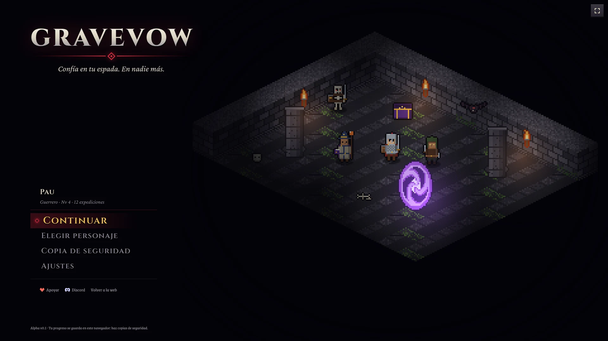
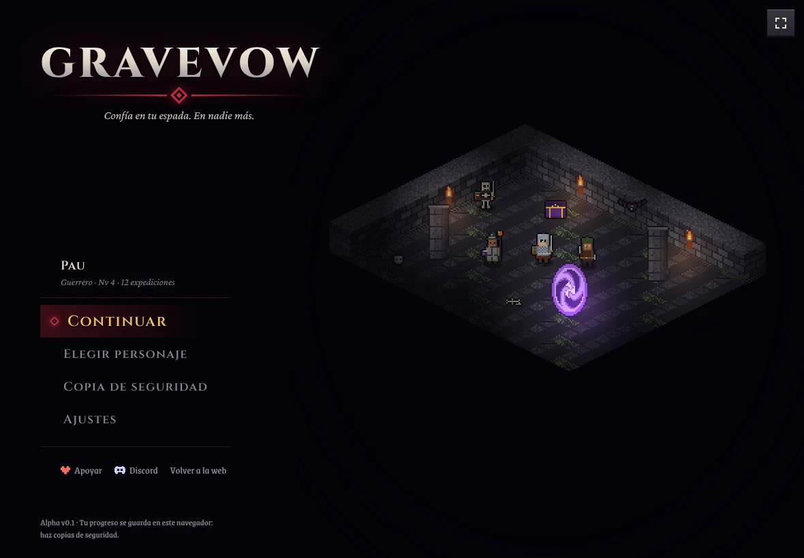
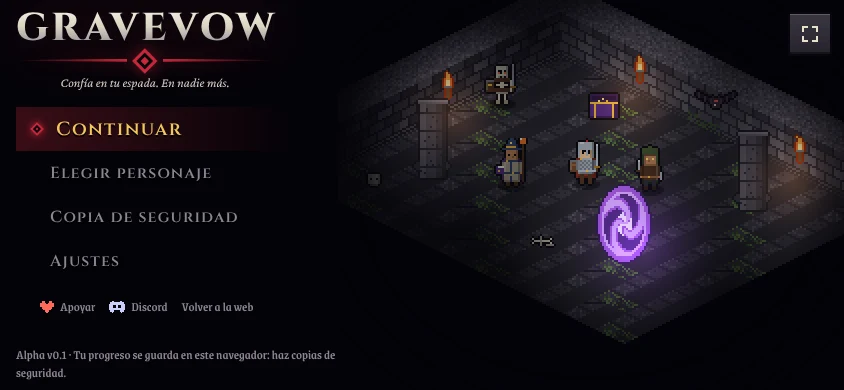
C · Mi propuesta: menú de videojuego
Sin cajas de botón: entradas grabadas en la letra del logo, con el rombo del juramento marcando la elegida (ratón, toque o flechas del teclado y Enter). Encima, la ficha de la partida (nombre, clase, nivel y expediciones). Apoyar, Discord y Volver a la web pasan a una fila discreta al pie, porque no son del juego. Cada entrada sigue midiendo 44 px o más. Ver en vivo
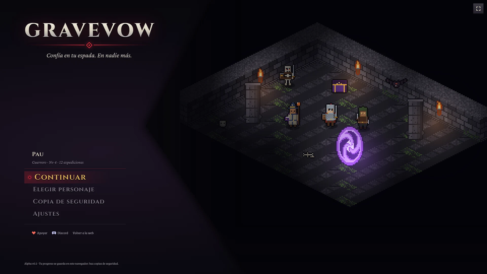
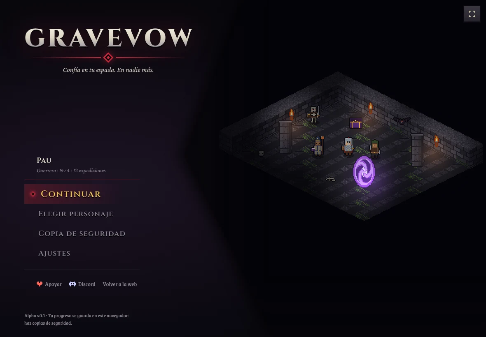
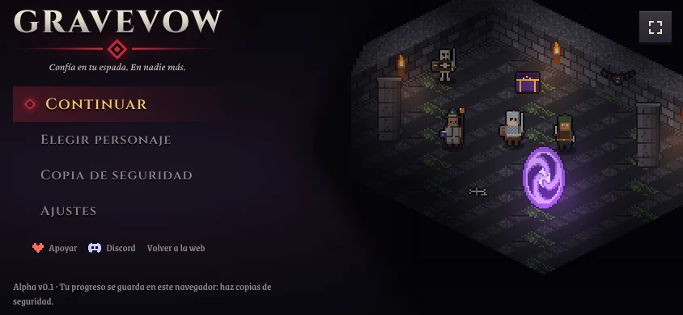
A · Tus botones, corte en «<»
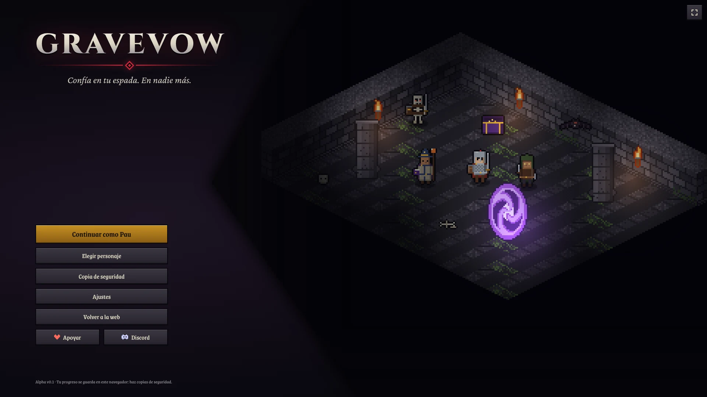
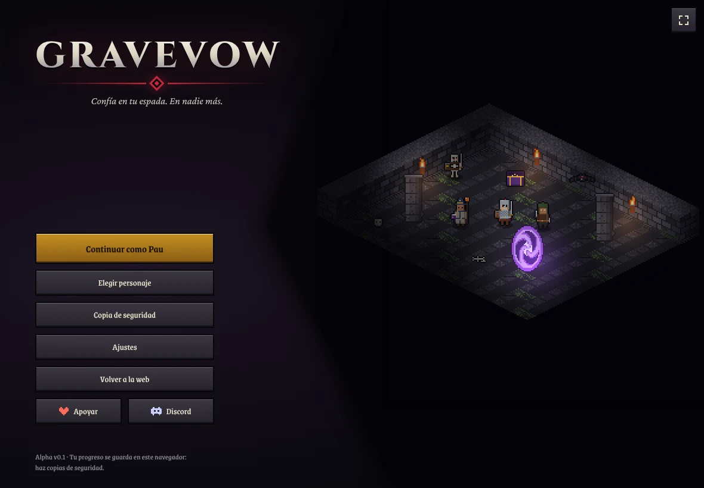
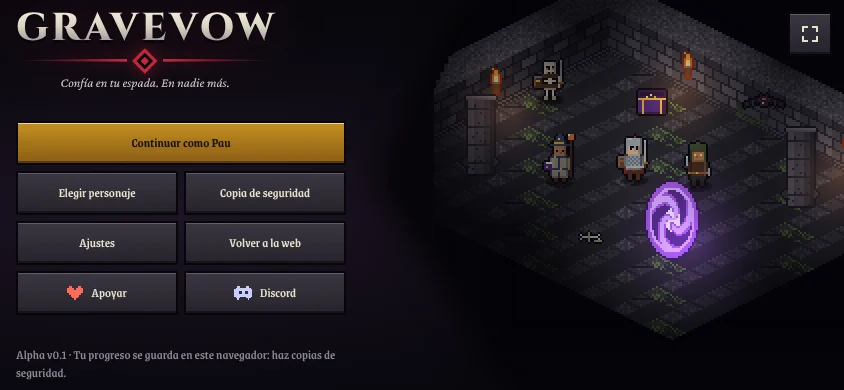
B · Corte recto
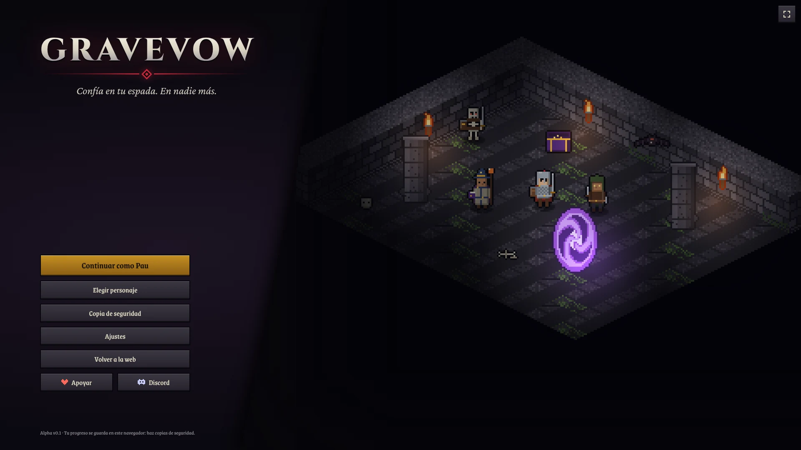
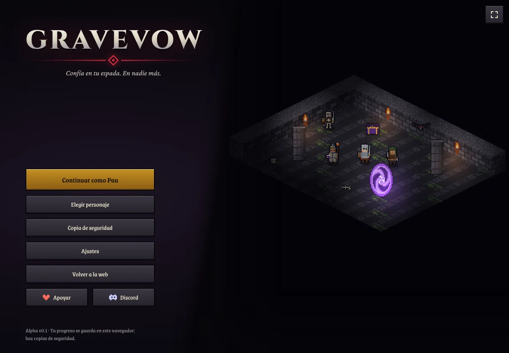
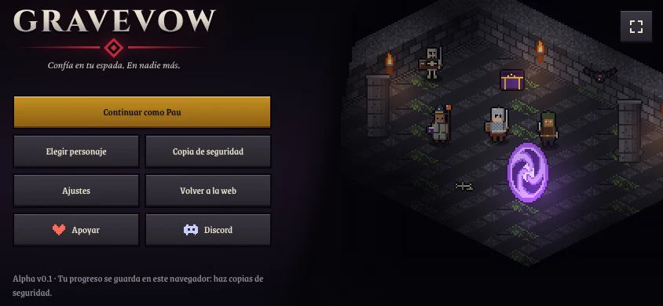
Antes
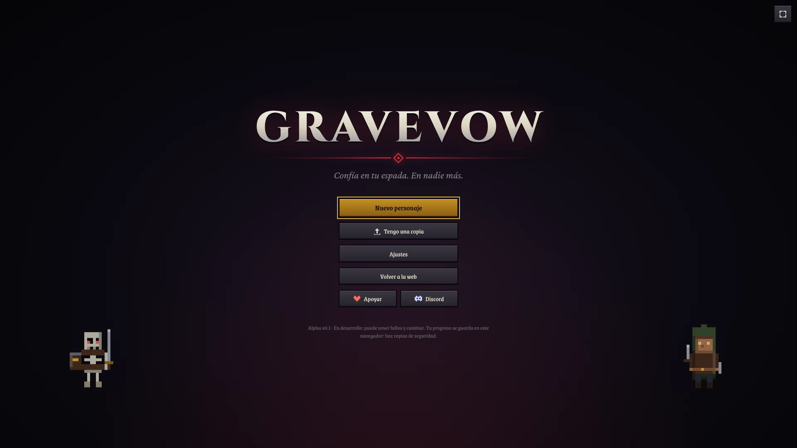
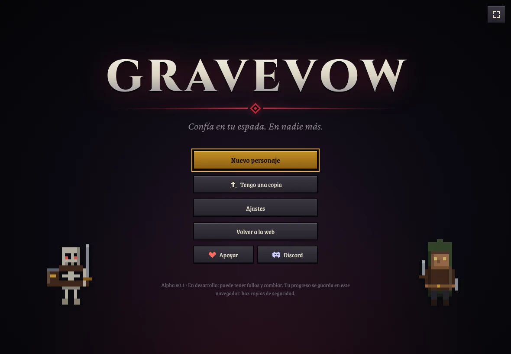
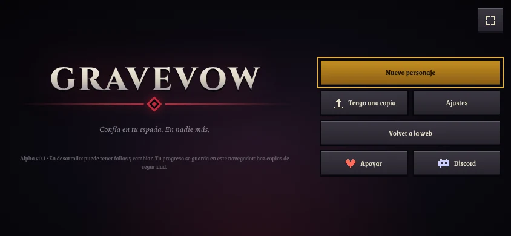